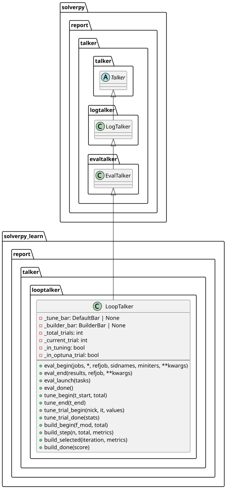

module looptalker
solverpy_learn.report.talker.looptalker
LoopTalker — progress reporter for hyperparameter tuning
Combines ATP evaluation progress (tqdm bars or log lines) and LightGBM
tuning progress into a single talker for
AutoTuner.
Runs entirely in the parent process; cross-process forwarding is handled by
RemoteTalker wrapping it.
LoopTalker
Bases: EvalTalker
Progress talker for the hyperparameter tuning pipeline.

Outside a tuning phase, behaves identically to
EvalTalker (per-job
SolvingBar + cumulative RunningBar).
Inside a tuning phase (between tune_begin / tune_end), switches to
two-bar tuning mode: an outer tune bar counting completed trials, and
an inner [N/M] build or [N/M] eval bar for the current LightGBM
training or ATP evaluation. All desc strings are padded to the same width
for alignment.
Set headless=True for non-interactive use: all handlers use
logger.info and no tqdm bars are created.
Source code in packages/solverpy-learn/src/solverpy_learn/report/talker/looptalker.py
26 27 28 29 30 31 32 33 34 35 36 37 38 39 40 41 42 43 44 45 46 47 48 49 50 51 52 53 54 55 56 57 58 59 60 61 62 63 64 65 66 67 68 69 70 71 72 73 74 75 76 77 78 79 80 81 82 83 84 85 86 87 88 89 90 91 92 93 94 95 96 97 98 99 100 101 102 103 104 105 106 107 108 109 110 111 112 113 114 115 116 117 118 119 120 121 122 123 124 125 126 127 128 129 130 131 132 133 134 135 136 137 138 139 140 141 142 143 144 145 146 147 148 149 150 151 152 153 154 155 156 157 158 159 160 161 162 163 164 165 166 167 168 169 170 171 172 173 174 175 176 177 178 179 180 181 182 183 184 185 186 187 188 189 190 191 192 193 194 195 196 197 198 199 200 201 202 203 204 205 206 207 208 209 210 211 212 213 214 215 216 217 218 219 220 221 222 223 224 225 226 227 228 229 230 231 232 233 234 235 236 237 238 239 240 241 242 243 244 245 246 247 248 249 250 251 252 253 254 255 256 | |
__init__(headless: bool = False) -> None
Parameters:
| Name | Type | Description | Default |
|---|---|---|---|
headless
|
bool
|
if |
False
|
Source code in packages/solverpy-learn/src/solverpy_learn/report/talker/looptalker.py
71 72 73 74 75 76 77 78 79 80 81 82 83 | |
build_begin(f_mod: str, total: int) -> None
Open a BuilderBar with [N/M] build label if not headless.
Source code in packages/solverpy-learn/src/solverpy_learn/report/talker/looptalker.py
221 222 223 224 225 226 227 228 | |
build_done(score: float) -> None
Close the builder bar.
Source code in packages/solverpy-learn/src/solverpy_learn/report/talker/looptalker.py
251 252 253 254 255 256 | |
build_selected(iteration: int, metrics: dict[str, dict[str, float]]) -> None
Report selected-model metrics through the log/reporting layer.
Source code in packages/solverpy-learn/src/solverpy_learn/report/talker/looptalker.py
243 244 245 246 247 248 249 | |
build_step(n: int, total: int, metrics: dict[str, dict[str, float]]) -> None
Update the builder bar, refresh tune bar, and emit periodic log lines.
Source code in packages/solverpy-learn/src/solverpy_learn/report/talker/looptalker.py
230 231 232 233 234 235 236 237 238 239 240 241 | |
eval_begin(jobs, *, refjob=None, sidnames=True, miniters=1, **kwargs) -> None
Outside tuning: full EvalTalker bars. Inside tuning: single RunningBar, skips report.
Source code in packages/solverpy-learn/src/solverpy_learn/report/talker/looptalker.py
104 105 106 107 108 109 110 111 112 113 114 115 116 117 118 119 120 121 122 123 124 125 126 127 128 129 130 131 132 133 134 135 | |
eval_done() -> None
Outside tuning: close job bar. Inside tuning: log without closing any bar.
Source code in packages/solverpy-learn/src/solverpy_learn/report/talker/looptalker.py
165 166 167 168 169 170 | |
eval_end(results, refjob=None, **kwargs) -> None
Outside tuning: full EvalTalker end. Inside tuning: close eval bar, update tune bar.
Source code in packages/solverpy-learn/src/solverpy_learn/report/talker/looptalker.py
137 138 139 140 141 142 143 144 145 146 147 148 149 150 | |
eval_launch(tasks: Sequence[Task]) -> None
Outside tuning: per-job SolvingBar. Inside tuning: record time only.
Source code in packages/solverpy-learn/src/solverpy_learn/report/talker/looptalker.py
158 159 160 161 162 163 | |
eval_status(new: bool | None, n: int = 1) -> None
Update eval bar and refresh tune bar to keep it visible.
Source code in packages/solverpy-learn/src/solverpy_learn/report/talker/looptalker.py
152 153 154 155 156 | |
terminate() -> None
Delegate to parent; _tune_bar is closed by tune_end().
Source code in packages/solverpy-learn/src/solverpy_learn/report/talker/looptalker.py
215 216 217 | |
tune_begin(t_start: float, total: int = 0) -> None
Enter tuning mode; create outer tune bar if not headless.
Source code in packages/solverpy-learn/src/solverpy_learn/report/talker/looptalker.py
174 175 176 177 178 179 180 181 182 | |
tune_end(t_end: float) -> None
Leave tuning mode; close tune bar and restore info logs.
Source code in packages/solverpy-learn/src/solverpy_learn/report/talker/looptalker.py
184 185 186 187 188 189 190 191 192 | |
tune_eval_begin() -> None
Suppress eval log messages while ATP evaluation runs inside a tuning trial.
Source code in packages/solverpy-learn/src/solverpy_learn/report/talker/looptalker.py
207 208 209 | |
tune_eval_end(results: dict) -> None
Re-enable eval log messages after tuning ATP evaluation.
Source code in packages/solverpy-learn/src/solverpy_learn/report/talker/looptalker.py
211 212 213 | |
tune_trial_begin(nick: str, it: int, values: list) -> None
Mark start of Optuna trial and delegate to LogTalker.
Source code in packages/solverpy-learn/src/solverpy_learn/report/talker/looptalker.py
194 195 196 197 | |
tune_trial_done(stats: dict[str, Any]) -> None
Increment tune bar at end of Optuna trial.
Source code in packages/solverpy-learn/src/solverpy_learn/report/talker/looptalker.py
199 200 201 202 203 204 205 | |